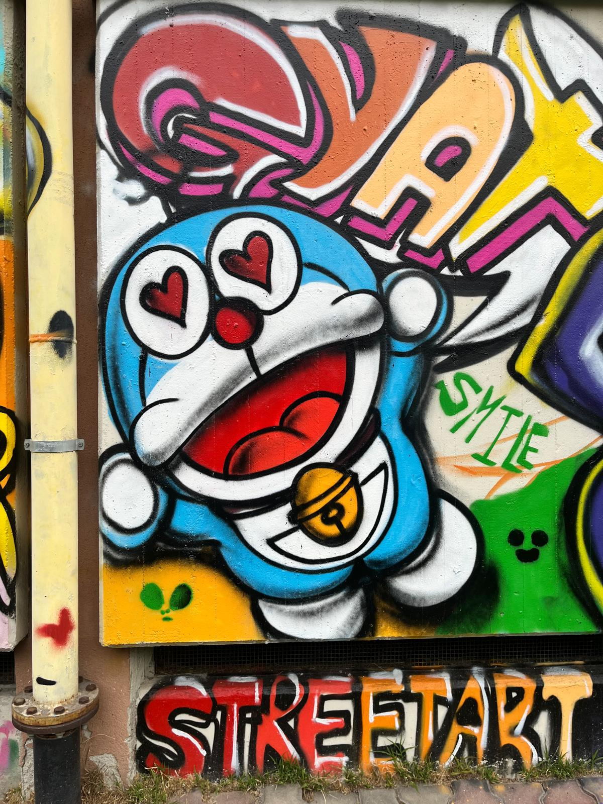

Concetto del Progetto
Il murales ha come concetto principale l'Open Book, simbolo di conoscenza e condivisione. Rappresenta l'importanza di aprire la mente e crescere attraverso la cultura, superando i limiti della sola teoria tramite l'esperienza pratica.
Iconografia e Personaggi
Doraemon

Il gatto robot del futuro che aiuta a crescere e diventare responsabili. Nel murales rappresenta gioia, amicizia e fantasia.
Ragno di Spiderman

Un'iconografia stilizzata con linee nette e colori intensi che trasmette mistero e dinamismo, celebrando i valori di coraggio e giustizia.
Gumball (Super Saiyan)

Raffigurato in versione Super Saiyan, unisce il mondo degli anime e dei cartoni occidentali in un unico progetto di street art.
Girl with Balloon

Celebre icona di Banksy che simboleggia speranza, innocenza infantile e amore.
Cuore di Solidarietà

Due mani che formano un cuore rosso, simbolo di amicizia, empatia e sostegno reciproco all'interno della comunità scolastica.
Cultura Pop

Celebrazione della cultura giovanile attraverso personaggi come Deadpool, Fortnite, Kuromi e Gengar, integrati in un vivace collage.
Le Tecniche del Lavoro
Neururalismo
Unione di murales moderni con tecniche miste (pittura, spray, collage) per trattare temi sociali e natura.
Stencil Art
Uso di mascherine ritagliate per riprodurre immagini con contorni netti e precisi.
Graffiti-Writing
Scrittura urbana basata su lettere stilizzate (lettering) e firme personali dette "tag".
Intervista al Prof. Miglionico
Il progetto è nato nel 2023-2024 per rendere la scuola un luogo "bello e degno di rispetto". Ha coinvolto 25 studenti per 5-6 settimane, integrando lezioni teoriche e lavoro concreto sul campo.
L'obiettivo principale era dimostrare come l'esperienza pratica sia fondamentale per un apprendimento efficace e per superare i limiti della sola teoria.